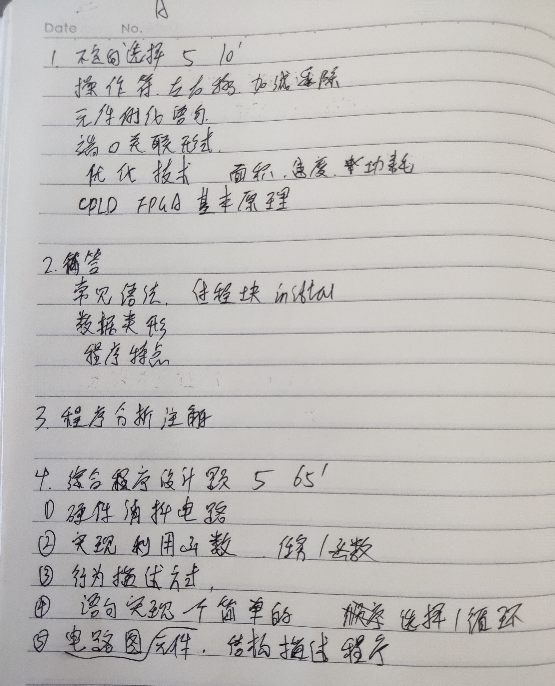
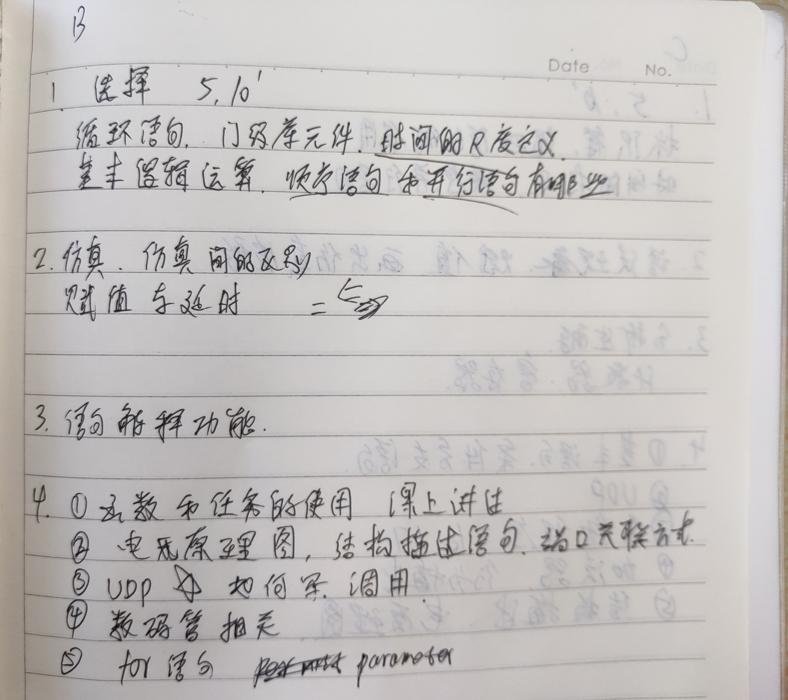
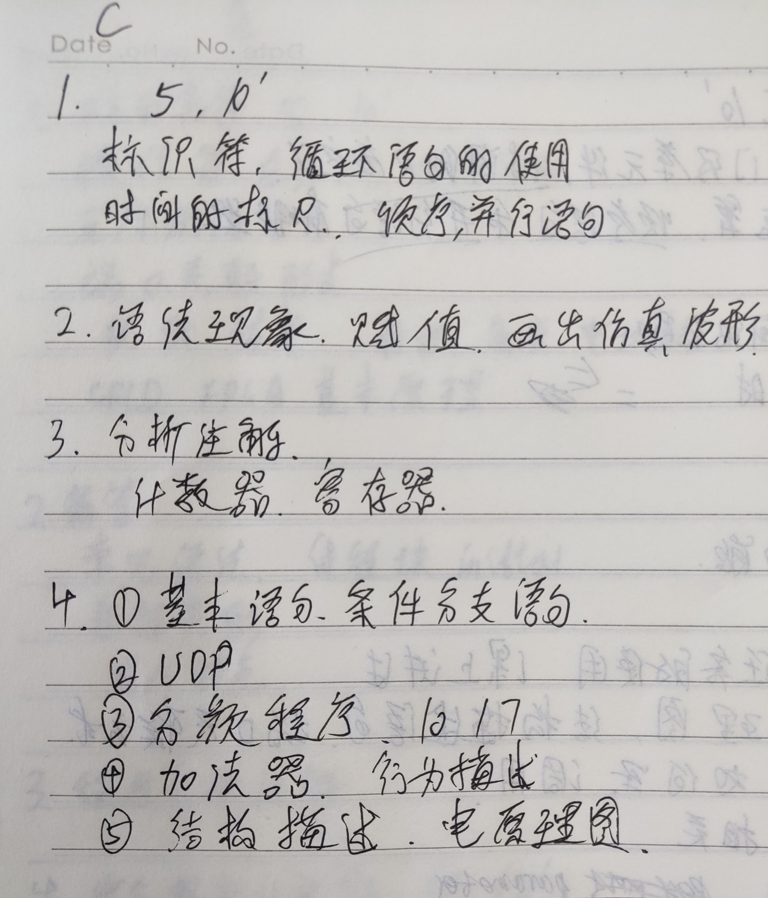

2019-2020 第一学期中国矿业大学 HDL 语言应用与设计 A卷
一、选择题
- 右移操作
- EDA 设计官方语言（不就是 VHDL 和 Verilog 嘛）
- 端口两种关联方式
- 面积、功耗优化方法
- CPLD、FPGA 基本原理（乘积项和查找表）
二、简答题
- always 和 initial 主要区别？能否嵌套？
- 给一段程序，写出他们的数据类型
- VHDL 和 Verilog 程序区别
三、程序分析注解
- 给了一个函数，好像是奇偶校验
四、程序设计题
- 硬件消抖电路
- 写个函数求一个 4 位二进制数含 1 的个数，书上原题
- 给了个仿真图，计数从 0 - 9 再从 9 - 0 实现它
- 仿真 100 个时间单位，高电平 60 ，低电平 40
- 4 位 D 触发器，元件例化语句
直接上干货，三套试卷


